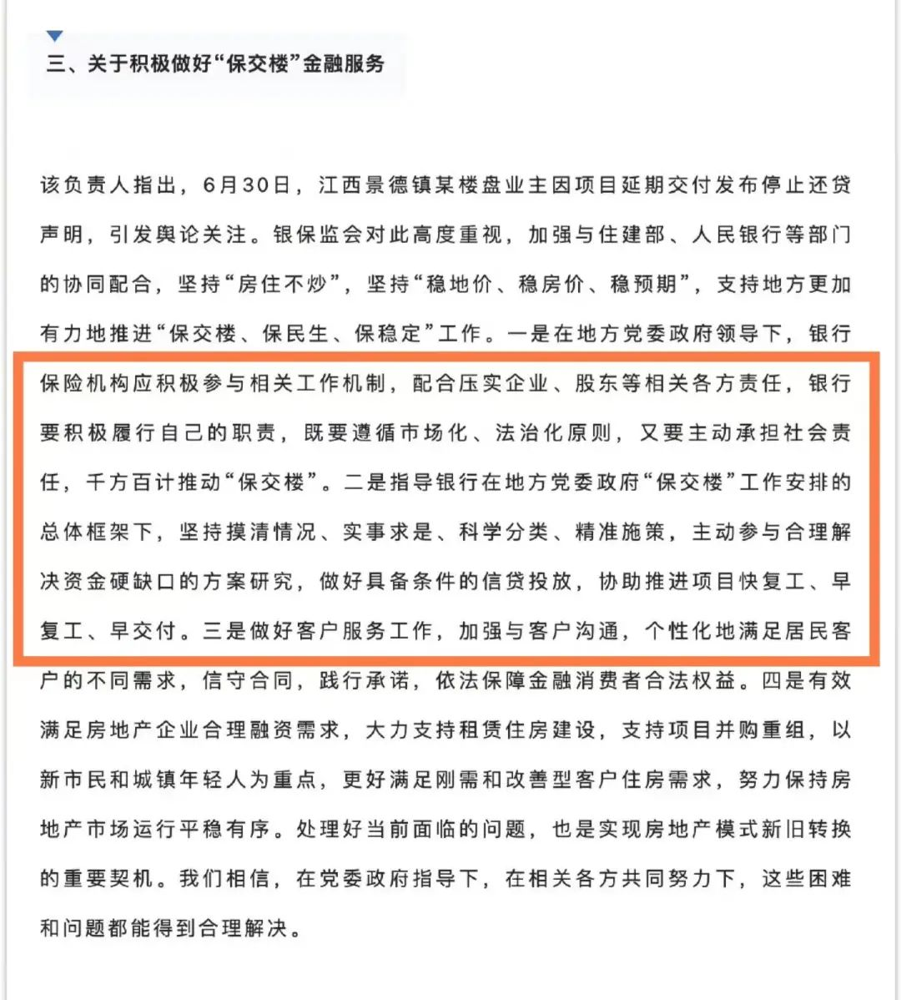
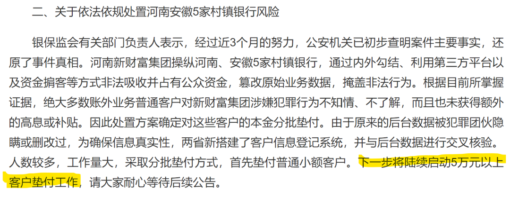

停贷的雷，总得有人抗
原创 V姐万事屋 V姐来了 2022-07-18 14:38 发表于上海
原文链接(长) 原文链接(短)
Hi，我是V姐。
好久不见。前两周在全国各地跑，周末终于回上海了。高温天，马不停蹄地见人，经常都是忙到深夜才回酒店，我现在深深地感受到赚钱最后拼的是体力。
因为你周围都是很聪明的人，大家执行力也都很强。最后就是看谁能更快更细致地把想法落实下去。比如我周末在家躺了2天才缓过来，生产力基本为0 。统一老师已经把本次出差心得写成13000字的课程，录好音发在我们社群了。
最近大家最关心的肯定是停贷风波了。
昨晚银保监会相关负责人出来喊话，讲银行要【千方百计保交楼】，【主动参与和解决资金硬缺口的方案研究，做好具备条件的信贷投放】。

也就是说，银行会帮忙出来输血。
很多朋友或许还不相信，我个人认为这是最有可能的解决方案，下面我来帮大家盘一盘，这个事情里，各方的痛点。
首先 **烂尾的开发商**，他没钱，已经躺平了。既没法保交楼，也没法拿地，整个就是在ICU，还有一口气。你骂他找他没用的，没钱就是没钱，把老板抓起来枪毙也没用。
**地方ZF**，老实说，他也没钱。今年财政都困难成啥样了，我们全国跑下来，从珠三角长三角到西北内陆，公务员老师国央企大多在降薪。地方还指望卖地卖房回血呢，现在烂尾停贷声势浩大，大家都不敢买期房了，这个对于地方ZF来说是很要命的，他比谁都着急。
地是面粉，房子是面包。
当初为什么要有预售制度？是为了高周转。高周转意味着更加频繁的卖面粉，面粉钱给谁了？大家都清楚，面包款的5-6成，是面粉钱。
为什么监管账户的钱不翼而飞？这不是买面粉的人要动就能动的，要卖面粉的开口（房管局）才行。你不让挪用，就没法高周转啊，本来4个月卖一次面粉，现在2个月就可以，收入翻倍。
很多面粉不好卖的三四线，求着开发商来买，都是签口袋协议的。哪里有什么监管账户？
真要深究，违规的是谁呢？
投资也好，买卖也好，权责要对等。不能只赚钱，不担责。
所以现在眼看着出了问题，地方wei wen压力很大，谁能出钱保交楼，他们一定是全力配合的。
再说 **银行**。银行本身是政策的执行者，也是需要盈利的金融机构。
现在他们放出去的贷款收不回来，手上只有没法拍卖的烂尾楼。那他这笔交易肯定是亏了嘛。
很多开发商并非资不抵债，他是现金流断裂，地还在那里，房子也盖了个七七八八，可能一平米再有2000块，他也就完工了。
只要完工了，交房了，购房者还是愿意继续还贷款的，盖完的房子也可以继续卖，回款也有一定保障。这时候，你是银行，你是借钱给他盖完楼划算，还是看着他死划算？
唯一的阻碍就是三道红线政策。这些暴雷的开发商，负债率肯定是踩红线了。
可是你想想，政策不就是人定的吗？
要调控，可以出三道红线。要输血，可以取消嘛。
再不行，还能发债，大家记得20年我们发行了1万亿抗疫特别国债吗？
现在银行系统预估烂尾问题需要5000亿，那发行5000亿【拯救烂尾】特别国债行不行？
总之，事情到这个地步，只有银行系统有能力收拾这个烂摊子。这么多老百姓，6个钱包毕生积蓄，必须要有一个解决方案。
再来说说投资这块，银行系统一年的利润总额是2.5万亿，最坏的情况，白出这5000亿全部算坏账，损失利润20%，而且是一次性影响。尤其一些头部银行，发布的数据显示，停贷占他们的贷款余额比例非常小，都在0.01%-0.02%之间。所以我个人认为上周市场过于恐慌了，目前并没有系统性风险。
另外，昨晚同一个采访里，银保监会负责人提到，着手启动河南村镇银行5万以上本金的垫付工作。

信心比黄金还要珍贵，希望这些朋友能尽快拿到钱。
* * *
跟大家分享一个这次出差的小插曲，我在深圳的时候，意外码黄了（24小时内核酸阴性）。
所以我哪也去不了，不能坐车，不能回酒店，订了跟朋友们见面的地方也进不去。就近测完核酸，深圳的朋友们就陪着我在户外聊天。所幸深圳速度很快，核酸测完2小时码就绿了，感谢大家陪着我从黄码聊到了绿码。
合个照，朋友们帮忙打光，亮到过曝哈哈。人间还是值得。